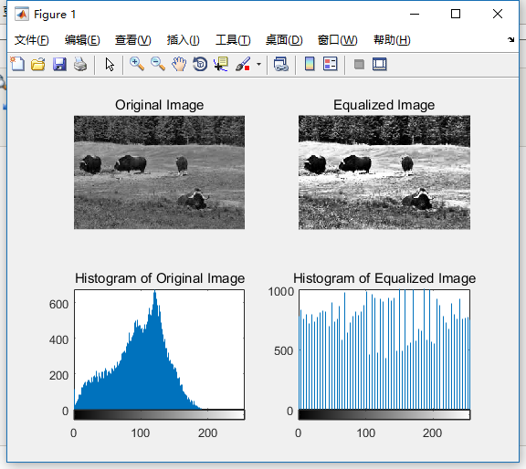

% Initialize an object for reading video videoObj = vision.VideoFileReader('video1.mp4', 'ImageColorSpace', 'RGB'); % Get video frame size and frame rate S = info(videoObj); width = S.VideoSize(1); height = S.VideoSize(end); frame_rate = S.VideoFrameRate;
% Get individual video frames image_data = step(videoObj);
% Run the loop until all frames have been displayed while ~isDone(videoObj) % Display video frame one by one imshow(image_data);
image_data = step(videoObj); end
% Release the object for reading video release(videoObj);
% Read an image A = imread('lena.jpg'); B = imread('lena.jpg');
% Convert the read image to single-channel A = rgb2gray(A);
% Plot and display the histogram if A is a single channel image with % default number of bins figure, subplot(1,3,1), imhist(A), title('Histogram of read image'); subplot(1,3,2), imshow(A), title('Grayscale image'); subplot(1,3,3), imshow(B), title('RGB image');
% Plot and display the histogram if A is a 3 channel image with % default number of bins figure, imhist(A(:, :, 1)), title('Histogram of 1st channel of read image'); figure, imhist(A(:, :, 2)), title('Histogram of 2nd channel of read image'); figure, imhist(A(:, :, 3)), title('Histogram of 3rd channel of read image');
% Convert the image to single channel image A = rgb2gray(A);
% Equalize the histogram of read single channel image A_histeq = histeq(A);
% Display original and equalized images side by side with their respective % histogram plots figure, subplot(2, 2, 1), imshow(A), title('Original Image'); subplot(2, 2, 2), imshow(A_histeq), title('Equalized Image'); subplot(2, 2, 3), imhist(A), title('Histogram of Original Image'); subplot(2, 2, 4), imhist(A_histeq), title('Histogram of Equalized Image');

关键：imhist，histeq。
1 2 3 4 5 6 7 8 9 10 11 12 13 14 15 16 17 18
clear all; close all; clc;
% Read a RGB image A = imread('test1.jpg');
% Convert the RGB image into HSV image A_hsv = rgb2hsv(A);
% Perform histogram equalization of V-channel in HSV image which is the 3rd % channel A_hsv(:, :, 3) = histeq(A_hsv(:, :, 3));
% Convert back equalized HSV image into RGB image A_histeq = hsv2rgb(A_hsv);
% Display original and equalized RGB images side by side figure, subplot(1, 2, 1), imshow(A), title('Original RGB image'); subplot(1, 2, 2), imshow(A_histeq), title('Equalized RGB image');
% Generate Gaussian and Average filters h_gaussian = fspecial('gaussian'); h_average = fspecial('average');
% Filter input image using generated Gaussian and Average filters B_gaussian = imfilter(A, h_gaussian); B_average = imfilter(A, h_average);
% Filter input image using Median filter % Median filtering function takes as input grayscale image A_gray = rgb2gray(A); B_median = medfilt2(A_gray);
% Display original and filtered images side-by-side for comparing the % result of image de-noising figure, subplot(2, 2, 1), imshow(A), title('Original image with Salt & Pepper noise'); subplot(2, 2, 2), imshow(B_gaussian), title('Input image filtered using Gaussian filter'); subplot(2, 2, 3), imshow(B_average), title('Input image filtered using Average filter'); subplot(2, 2, 4), imshow(B_median), title('Input image filtered using Median filter');
% Read an input image A = imread('binaryImg1.jpg');
% Convert the read image to single channel image A = rgb2gray(A);
% Generate structuring element for use se = strel('disk', 5);
% Perform image dilation % To get the object boundary, subtract the original image from the dilated % version of the orginal image B_dilated = imdilate(A, se);
% Subtract the original image from dilated image B_boundary = B_dilated - A;
% Display images side by side figure, subplot(1, 3, 1), imshow(A), title('Original image'); subplot(1, 3, 2), imshow(B_dilated), title('Original image after Dilation'); subplot(1, 3, 3), imshow(B_boundary), title('Original image with highlighted binary object boundaries');